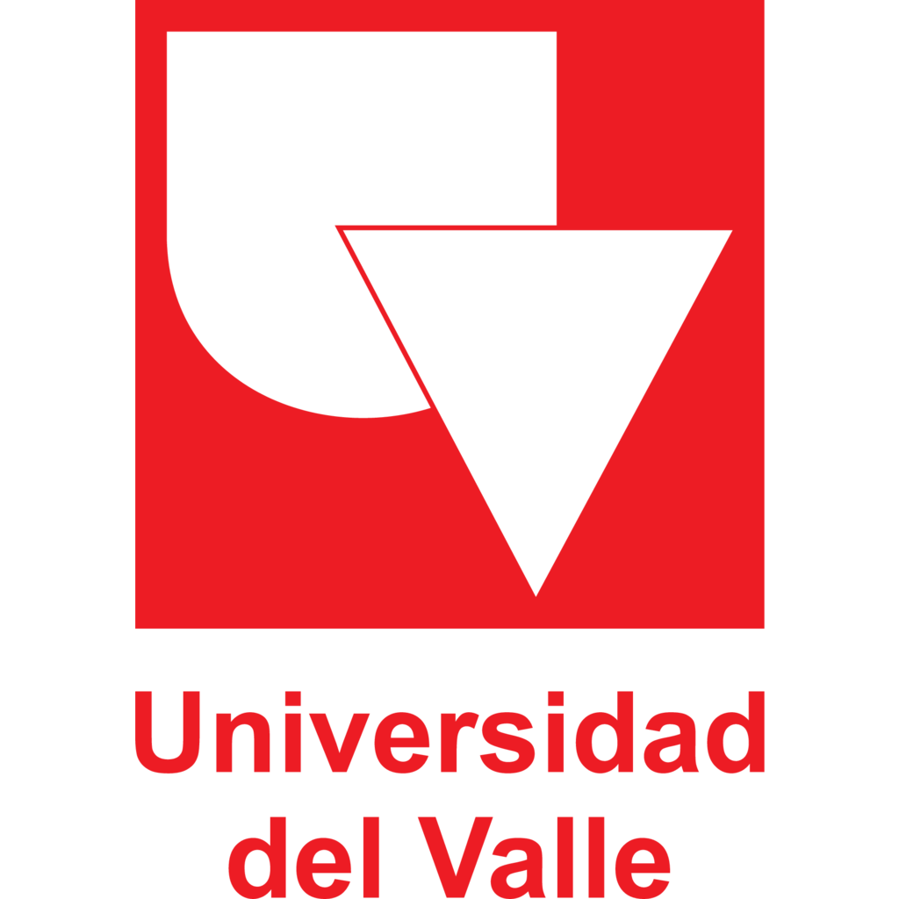

Formación academica actual

Al terminar mi formación de tecnología en topografía en el año 2016 continué ejerciendo el tecnólogo durante más de un año. Personalmente soy una persona que intenta mejorar personal y académicamente además, considerando la prospección que tenía la topografía en diferentes industrias investigué carreras afines al dicha tecnología encontré la Ingeniería topográfica que cumplia con mis expectativas académicas para ese momento, en esta búsqueda encontré la Universidad del Valle que me llamó la atención por el pensum, intenté ingresar al programa aproximadamente 3 veces y a la cuarta vez logré ingresar afortunadamente en el segundo semestre del año 2018 (2018-II), fue un poco difícil al inicio considerando la distancia a la cual me encontraba pero finalmente fue algo bueno para mí por la formación académica a la cual tenía la oportunidad de acceder y el cambio cultural fue agradable.
Actualmente me encuentro en 9no semestre de Ingeniería topográfica en la Universidad del Valle agradecido de los conocimientos que he adquirido, con un panorama mucho más amplio de cuando comencé la carrera al aplicar nuevas tecnologías que no consideré antes.